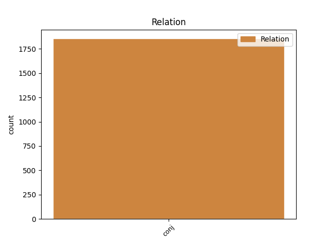
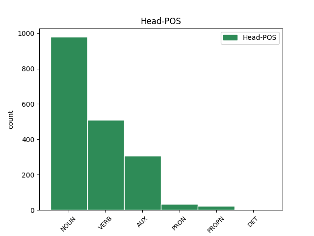
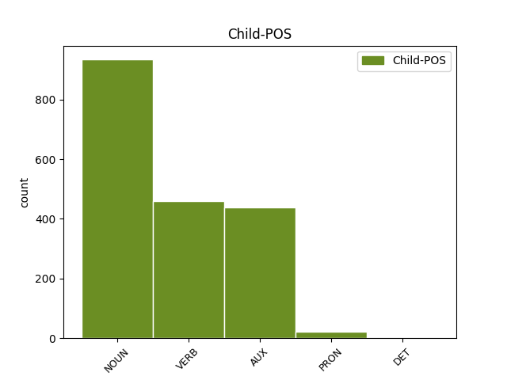

Distribution of features within this leaf



Agreement Rules sorted by frequency.
- When the dependent token is the conjunct(conj) of the head token, and the dependent token is NOUN.
1 Արմեն _ _ _ _ 0 _ _ _
2 Աշոտյանը _ _ _ _ 0 _ _ _
3 , _ _ _ _ 0 _ _ _
4 որը _ _ _ _ 0 _ _ _
5 , _ _ _ _ 0 _ _ _
6 ըստ _ _ _ _ 0 _ _ _
7 մամուլի _ _ _ _ 0 _ _ _
8 , _ _ _ _ 0 _ _ _
9 կարող _ _ _ _ 0 _ _ _
10 է _ _ _ _ 0 _ _ _
11 խորհրդարանի _ _ _ _ 0 _ _ _
12 նախագահ _ _ _ _ 0 _ _ _
13 դառնալ _ _ _ _ 0 _ _ _
14 , _ _ _ _ 0 _ _ _
15 մեկնաբանելով _ _ _ _ 0 _ _ _
16 ՀՀԿ-ի _ _ _ _ 0 _ _ _
17 « _ _ _ _ 0 _ _ _
18 անվտանգություն անվտանգություն NOUN _ Animacy=Nhum|Case=Nom|Definite=Ind|Number=Sing 0 _ _ _
19 և _ _ _ _ 0 _ _ _
20 առաջընթաց առաջընթաց NOUN _ Animacy=Nhum|Case=Nom|Definite=Ind|Number=Sing 18 conj _ LTranslit=aṙaǰënt’ac’|SpaceAfter=No|Translit=aṙaǰënt’ac’
21 » _ _ _ _ 0 _ _ _
22 կարգախոսը _ _ _ _ 0 _ _ _
23 , _ _ _ _ 0 _ _ _
24 ասել _ _ _ _ 0 _ _ _
25 է _ _ _ _ 0 _ _ _
26 , _ _ _ _ 0 _ _ _
27 որ _ _ _ _ 0 _ _ _
28 « _ _ _ _ 0 _ _ _
29 առաջընթացը _ _ _ _ 0 _ _ _
30 » _ _ _ _ 0 _ _ _
31 ապահովելու _ _ _ _ 0 _ _ _
32 է _ _ _ _ 0 _ _ _
33 Կարեն _ _ _ _ 0 _ _ _
34 Կարապետյանի _ _ _ _ 0 _ _ _
35 կառավարությունը _ _ _ _ 0 _ _ _
36 , _ _ _ _ 0 _ _ _
37 իսկ _ _ _ _ 0 _ _ _
38 « _ _ _ _ 0 _ _ _
39 անվտանգության _ _ _ _ 0 _ _ _
40 » _ _ _ _ 0 _ _ _
41 մարմնավորումը _ _ _ _ 0 _ _ _
42 Սերժ _ _ _ _ 0 _ _ _
43 Սարգսյանն _ _ _ _ 0 _ _ _
44 է _ _ _ _ 0 _ _ _
45 : _ _ _ _ 0 _ _ _
1 - _ _ _ _ 0 _ _ _
2 Հուլիսյան _ _ _ _ 0 _ _ _
3 դեպքերը _ _ _ _ 0 _ _ _
4 շատ _ _ _ _ 0 _ _ _
5 բան _ _ _ _ 0 _ _ _
6 են _ _ _ _ 0 _ _ _
7 փոխել _ _ _ _ 0 _ _ _
8 նրանց _ _ _ _ 0 _ _ _
9 համար _ _ _ _ 0 _ _ _
10 , _ _ _ _ 0 _ _ _
11 ովքեր _ _ _ _ 0 _ _ _
12 ընդունակ _ _ _ _ 0 _ _ _
13 են _ _ _ _ 0 _ _ _
14 մտածելու _ _ _ _ 0 _ _ _
15 , _ _ _ _ 0 _ _ _
16 փոխվելու փոխվել VERB _ Case=Dat|Definite=Ind|Number=Coll|Polarity=Pos|Subcat=Intr|VerbForm=Gdv|Voice=Mid 0 _ _ _
17 և _ _ _ _ 0 _ _ _
18 փոխելու փոխել VERB _ Case=Dat|Definite=Ind|Number=Coll|Polarity=Pos|Subcat=Tran|VerbForm=Gdv|Voice=Act 16 conj _ LTranslit=p’oxel|SpaceAfter=No|Translit=p’oxelow
19 : _ _ _ _ 0 _ _ _
1 ՀՀԿ-ում _ _ _ _ 0 _ _ _
2 երեք _ _ _ _ 0 _ _ _
3 պայմանական _ _ _ _ 0 _ _ _
4 թիմ _ _ _ _ 0 _ _ _
5 է եմ AUX _ Aspect=Imp|Mood=Ind|Number=Sing|Person=3|Polarity=Pos|Tense=Pres|VerbForm=Fin 0 _ _ _
6 ձևավորվել _ _ _ _ 0 _ _ _
7 , _ _ _ _ 0 _ _ _
8 և _ _ _ _ 0 _ _ _
9 նրանց _ _ _ _ 0 _ _ _
10 միջև _ _ _ _ 0 _ _ _
11 պայքարը _ _ _ _ 0 _ _ _
12 կարող _ _ _ _ 0 _ _ _
13 է եմ AUX _ Aspect=Imp|Mood=Ind|Number=Sing|Person=3|Polarity=Pos|Tense=Pres|VerbForm=Fin 5 conj _ LTranslit=em|Translit=ē
14 ավելի _ _ _ _ 0 _ _ _
15 կոշտ _ _ _ _ 0 _ _ _
16 լինել _ _ _ _ 0 _ _ _
17 , _ _ _ _ 0 _ _ _
18 քան _ _ _ _ 0 _ _ _
19 ընդդիմության _ _ _ _ 0 _ _ _
20 և _ _ _ _ 0 _ _ _
21 իշխանության _ _ _ _ 0 _ _ _
22 միջև _ _ _ _ 0 _ _ _
23 : _ _ _ _ 0 _ _ _
1 Ղարաբաղյան _ _ _ _ 0 _ _ _
2 շարժման _ _ _ _ 0 _ _ _
3 հետագա _ _ _ _ 0 _ _ _
4 բոլոր _ _ _ _ 0 _ _ _
5 օրերին _ _ _ _ 0 _ _ _
6 հրապարակում _ _ _ _ 0 _ _ _
7 էին _ _ _ _ 0 _ _ _
8 և _ _ _ _ 0 _ _ _
9 նրանք նա PRON _ Case=Nom|Number=Plur|Person=3|PronType=Prs 0 _ _ _
10 , _ _ _ _ 0 _ _ _
11 ովքեր _ _ _ _ 0 _ _ _
12 առաջին _ _ _ _ 0 _ _ _
13 օրը _ _ _ _ 0 _ _ _
14 գնացին _ _ _ _ 0 _ _ _
15 Միլոշ _ _ _ _ 0 _ _ _
16 Ֆորմանի _ _ _ _ 0 _ _ _
17 ֆիլմը _ _ _ _ 0 _ _ _
18 նայելու _ _ _ _ 0 _ _ _
19 , _ _ _ _ 0 _ _ _
20 նաև _ _ _ _ 0 _ _ _
21 նրանք նա PRON _ Case=Nom|Number=Plur|Person=3|PronType=Prs 9 conj _ LTranslit=na|SpaceAfter=No|Translit=nrank’
22 , _ _ _ _ 0 _ _ _
23 ովքեր _ _ _ _ 0 _ _ _
24 չնայեցին _ _ _ _ 0 _ _ _
25 ֆիլմն _ _ _ _ 0 _ _ _
26 այդ _ _ _ _ 0 _ _ _
27 օրը _ _ _ _ 0 _ _ _
28 ՝ _ _ _ _ 0 _ _ _
29 քայլելով _ _ _ _ 0 _ _ _
30 դեպի _ _ _ _ 0 _ _ _
31 Ազատության _ _ _ _ 0 _ _ _
32 հրապարակ _ _ _ _ 0 _ _ _
33 : _ _ _ _ 0 _ _ _
1 Տխրում _ _ _ _ 0 _ _ _
2 ես _ _ _ _ 0 _ _ _
3 , _ _ _ _ 0 _ _ _
4 թախանձագին _ _ _ _ 0 _ _ _
5 նայում _ _ _ _ 0 _ _ _
6 սրա սա PRON _ Case=Gen|Distance=Prox|Number=Sing|PronType=Dem 0 _ _ _
7 - _ _ _ _ 0 _ _ _
8 նրա նա DET _ Case=Gen|Number=Sing|Person=3|Poss=Yes|PronType=Prs 6 conj _ LTranslit=na|Translit=nra
9 աչքերին _ _ _ _ 0 _ _ _
10 , _ _ _ _ 0 _ _ _
11 թե _ _ _ _ 0 _ _ _
12 ` _ _ _ _ 0 _ _ _
13 որսացեք _ _ _ _ 0 _ _ _
14 , _ _ _ _ 0 _ _ _
15 էլի _ _ _ _ 0 _ _ _
16 ՜ _ _ _ _ 0 _ _ _
17 ... _ _ _ _ 0 _ _ _
Disagree Examples:
1 Մի _ _ _ _ 0 _ _ _
2 խոսքով _ _ _ _ 0 _ _ _
3 ՝ _ _ _ _ 0 _ _ _
4 մենք _ _ _ _ 0 _ _ _
5 դրա _ _ _ _ 0 _ _ _
6 հետ _ _ _ _ 0 _ _ _
7 էլ _ _ _ _ 0 _ _ _
8 գործ _ _ _ _ 0 _ _ _
9 չունենք ունեմ VERB _ Aspect=Imp|Mood=Ind|Number=Plur|Person=1|Polarity=Neg|Subcat=Tran|Tense=Pres|VerbForm=Fin|Voice=Act 0 _ _ _
10 , _ _ _ _ 0 _ _ _
11 մերը _ _ _ _ 0 _ _ _
12 չէ եմ AUX _ Aspect=Imp|Mood=Ind|Number=Sing|Person=3|Polarity=Neg|Tense=Pres|VerbForm=Fin 9 conj _ LTranslit=em|Translit=čē
13 այլևս _ _ _ _ 0 _ _ _
14 , _ _ _ _ 0 _ _ _
15 մերը _ _ _ _ 0 _ _ _
16 սա _ _ _ _ 0 _ _ _
17 է _ _ _ _ 0 _ _ _
18 ՝ _ _ _ _ 0 _ _ _
19 դժոխքը _ _ _ _ 0 _ _ _
20 , _ _ _ _ 0 _ _ _
21 որը _ _ _ _ 0 _ _ _
22 , _ _ _ _ 0 _ _ _
23 սակայն _ _ _ _ 0 _ _ _
24 , _ _ _ _ 0 _ _ _
25 հասցրել _ _ _ _ 0 _ _ _
26 ենք _ _ _ _ 0 _ _ _
27 սիրել _ _ _ _ 0 _ _ _
28 . _ _ _ _ 0 _ _ _
29 դեհ _ _ _ _ 0 _ _ _
30 , _ _ _ _ 0 _ _ _
31 շանը _ _ _ _ 0 _ _ _
32 որտեղ _ _ _ _ 0 _ _ _
33 էլ _ _ _ _ 0 _ _ _
34 կապես _ _ _ _ 0 _ _ _
35 , _ _ _ _ 0 _ _ _
36 կապվում _ _ _ _ 0 _ _ _
37 - _ _ _ _ 0 _ _ _
38 ընտելանում _ _ _ _ 0 _ _ _
39 - _ _ _ _ 0 _ _ _
40 սիրում _ _ _ _ 0 _ _ _
41 է _ _ _ _ 0 _ _ _
42 ։ _ _ _ _ 0 _ _ _
1 Իրականում _ _ _ _ 0 _ _ _
2 հեչ _ _ _ _ 0 _ _ _
3 սիրելու _ _ _ _ 0 _ _ _
4 բան _ _ _ _ 0 _ _ _
5 չի _ _ _ _ 0 _ _ _
6 . _ _ _ _ 0 _ _ _
7 հա _ _ _ _ 0 _ _ _
8 , _ _ _ _ 0 _ _ _
9 էլի _ _ _ _ 0 _ _ _
10 որ _ _ _ _ 0 _ _ _
11 ՝ _ _ _ _ 0 _ _ _
12 կապույտ _ _ _ _ 0 _ _ _
13 երկինք երկինք NOUN _ Animacy=Nhum|Case=Nom|Definite=Ind|Number=Sing 0 _ _ _
14 , _ _ _ _ 0 _ _ _
15 ծովեր ծով NOUN _ Animacy=Nhum|Case=Nom|Definite=Ind|Number=Plur 13 conj _ LTranslit=çov|SpaceAfter=No|Translit=çover
16 , _ _ _ _ 0 _ _ _
17 անտառներ _ _ _ _ 0 _ _ _
18 , _ _ _ _ 0 _ _ _
19 դաշտեր _ _ _ _ 0 _ _ _
20 : _ _ _ _ 0 _ _ _
1 Բանաձևը _ _ _ _ 0 _ _ _
2 մենք _ _ _ _ 0 _ _ _
3 չենք եմ AUX _ Aspect=Imp|Mood=Ind|Number=Plur|Person=1|Polarity=Neg|Tense=Pres|VerbForm=Fin 0 _ _ _
4 կարգել _ _ _ _ 0 _ _ _
5 , _ _ _ _ 0 _ _ _
6 տերունական _ _ _ _ 0 _ _ _
7 է եմ AUX _ Aspect=Imp|Mood=Ind|Number=Sing|Person=3|Polarity=Pos|Tense=Pres|VerbForm=Fin 3 conj _ LTranslit=em|SpaceAfter=No|Translit=ē
8 , _ _ _ _ 0 _ _ _
9 հակառակվելը _ _ _ _ 0 _ _ _
10 ` _ _ _ _ 0 _ _ _
11 անկարելի _ _ _ _ 0 _ _ _
12 ... _ _ _ _ 0 _ _ _
1 Բանաձևը _ _ _ _ 0 _ _ _
2 մենք _ _ _ _ 0 _ _ _
3 չենք _ _ _ _ 0 _ _ _
4 կարգել _ _ _ _ 0 _ _ _
5 , _ _ _ _ 0 _ _ _
6 տերունական _ _ _ _ 0 _ _ _
7 է եմ AUX _ Aspect=Imp|Mood=Ind|Number=Sing|Person=3|Polarity=Pos|Tense=Pres|VerbForm=Fin 0 _ _ _
8 , _ _ _ _ 0 _ _ _
9 հակառակվելը հակառակվել VERB _ Case=Nom|Definite=Def|Number=Coll|Polarity=Pos|Subcat=Intr|VerbForm=Gdv|Voice=Mid 7 conj _ LTranslit=hakaṙakvel|SpaceAfter=No|Translit=hakaṙakvelë
10 ` _ _ _ _ 0 _ _ _
11 անկարելի _ _ _ _ 0 _ _ _
12 ... _ _ _ _ 0 _ _ _
1 Լարիր _ _ _ _ 0 _ _ _
2 ՛ _ _ _ _ 0 _ _ _
3 թակարդներդ _ _ _ _ 0 _ _ _
4 , _ _ _ _ 0 _ _ _
5 աշխարհ աշխարհ NOUN _ Animacy=Nhum|Case=Nom|Definite=Ind|Number=Sing 0 _ _ _
6 ՛ _ _ _ _ 0 _ _ _
7 , _ _ _ _ 0 _ _ _
8 որսորդներ որսորդ NOUN _ Animacy=Hum|Case=Nom|Definite=Ind|Number=Plur 5 conj _ LTranslit=orsord|Translit=orsordner
9 ՛ _ _ _ _ 0 _ _ _
10 , _ _ _ _ 0 _ _ _
11 պատրաստ _ _ _ _ 0 _ _ _
12 եղեք _ _ _ _ 0 _ _ _
13 ՛ _ _ _ _ 0 _ _ _
14 , _ _ _ _ 0 _ _ _
15 նոր _ _ _ _ 0 _ _ _
16 մարդ _ _ _ _ 0 _ _ _
17 է _ _ _ _ 0 _ _ _
18 գալիս _ _ _ _ 0 _ _ _
19 ... _ _ _ _ 0 _ _ _